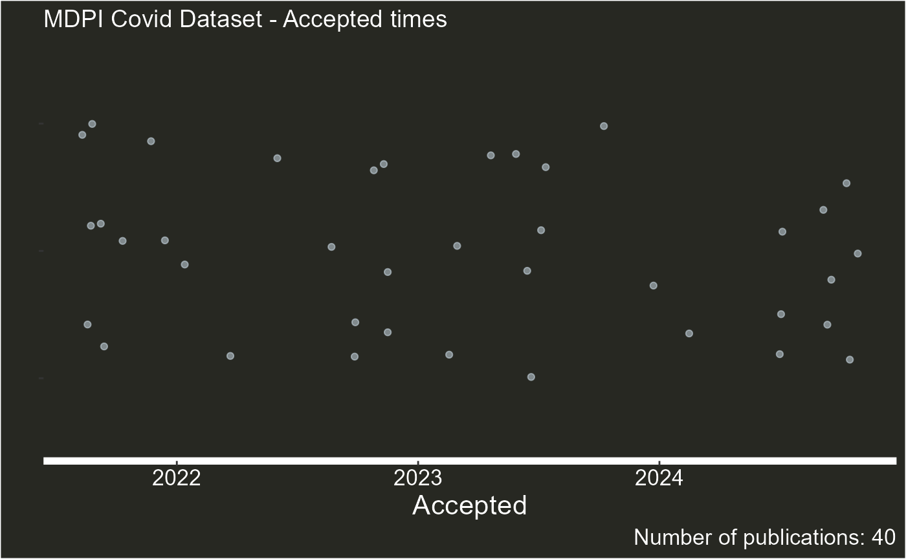
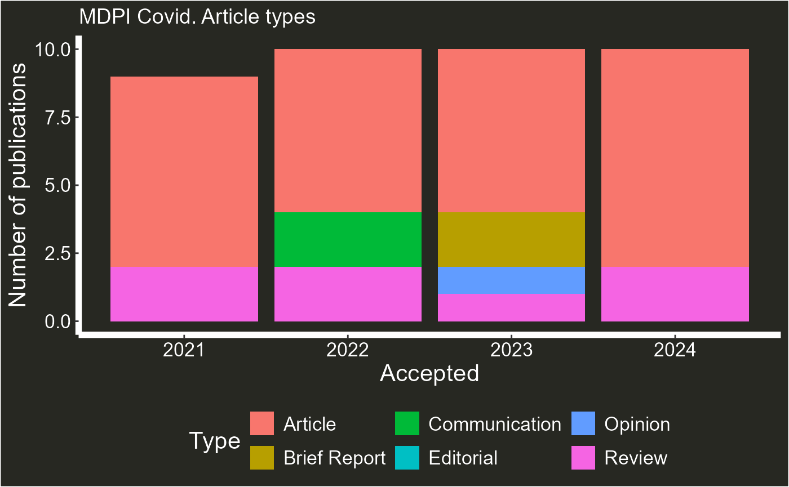
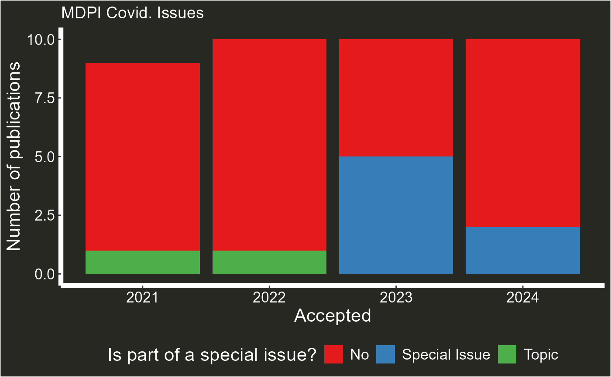

Introduction to `MDPIexploreR`
introduction_MDPIexploreR.RmdWelcome to MDPIexploreR. This article provides a brief
introduction to the key functionalities of this package. Although all
functions have been rigorously tested, occasional bugs or unexpected
issues may arise. Please report any problems via Github.
Similarly, and feel free to suggest enhancements or new features as
well.
Obtaining list of journals
MDPIexploreR functions rely on journal codes. These are
usually the same as journal titles (e.g. Plants), but occasionally they
are abbreviations (e.g., IJERPH). To find the code of the journal you
plan to explore use the MDPI_journals() function. This
function fetches data from the official MDPI journals page at https://www.mdpi.com/about/journals
and generates a table containing the names of the journals along with
their corresponding codes.
MDPI_journals()|>head(10)
#> journal code
#> 1 Acoustics acoustics
#> 2 Acta Microbiologica Hellenica amh
#> 3 Actuators actuators
#> 4 Administrative Sciences admsci
#> 5 Adolescents adolescents
#> 6 Advances in Respiratory Medicine arm
#> 7 Aerobiology aerobiology
#> 8 Aerospace aerospace
#> 9 Agriculture agriculture
#> 10 AgriEngineering agriengineeringArticle level information
MDPIexploreR makes easy to obtain a list of all articles
published in a journal. For example, to get a list of all articles
published in the journal “MDPI Covid” we just need to do:
article_find("covid")|>head(5)
#> [1] "https://www.mdpi.com/2673-8112/1/1/1"
#> [2] "https://www.mdpi.com/2673-8112/1/1/2"
#> [3] "https://www.mdpi.com/2673-8112/1/1/3"
#> [4] "https://www.mdpi.com/2673-8112/1/1/4"
#> [5] "https://www.mdpi.com/2673-8112/1/1/5"You can then use the article_info() function to obtain
editorial information about these journals. For this example, let’s
extract information for a sample of ten articles from the journal
Covid. Note that the more articles a journal has, the longer it
will take to retrieve the information. A progress bar will display the
current status. For large requests, I recommend having a stable internet
connection and dividing the results of article_find() into
smaller vectors. As a general rule, retrieving information for one
article takes approximately 1.2 seconds—so plan accordingly!
all_covid_articles<-article_find("covid")
article_info(all_covid_articles,sample=10)
#> | | | 0% | |======= | 10% | |============== | 20% | |===================== | 30% | |============================ | 40% | |=================================== | 50% | |========================================== | 60% | |================================================= | 70% | |======================================================== | 80% | |=============================================================== | 90% | |======================================================================| 100%
#> i article_type Received Accepted
#> 1 https://www.mdpi.com/2673-8112/2/11/110 Article 2022-10-06 2022-10-22
#> 2 https://www.mdpi.com/2673-8112/4/8/91 Review 2024-06-22 2024-08-13
#> 3 https://www.mdpi.com/2673-8112/1/4/63 Article 2021-11-17 2021-12-14
#> 4 https://www.mdpi.com/2673-8112/4/5/42 Article 2024-04-14 2024-05-07
#> 5 https://www.mdpi.com/2673-8112/4/6/51 Perspective 2024-05-06 2024-06-05
#> 6 https://www.mdpi.com/2673-8112/1/3/47 Article 2021-09-10 2021-11-02
#> 7 https://www.mdpi.com/2673-8112/4/9/99 Communication 2024-06-19 2024-07-31
#> 8 https://www.mdpi.com/2673-8112/3/2/9 Brief Report 2023-01-03 2023-01-27
#> 9 https://www.mdpi.com/2673-8112/3/1/5 Article 2022-11-19 2023-01-04
#> 10 https://www.mdpi.com/2673-8112/1/1/5 Article 2021-04-18 2021-06-23
#> tat year issue_type
#> 1 16 days 2022 No
#> 2 52 days 2024 No
#> 3 27 days 2021 No
#> 4 23 days 2024 No
#> 5 30 days 2024 No
#> 6 53 days 2021 No
#> 7 42 days 2024 No
#> 8 24 days 2023 No
#> 9 46 days 2023 No
#> 10 66 days 2021 NoVisualize the output of article_info() using the
plot_articles() function, which comes with three types of
graphs:
all_covid_articles<-article_find("covid")
articles_data<-article_info(all_covid_articles,sample=100)
#> | | | 0% | |= | 1% | |= | 2% | |== | 3% | |=== | 4% | |==== | 5% | |==== | 6% | |===== | 7% | |====== | 8% | |====== | 9% | |======= | 10% | |======== | 11% | |======== | 12% | |========= | 13% | |========== | 14% | |========== | 15% | |=========== | 16% | |============ | 17% | |============= | 18% | |============= | 19% | |============== | 20% | |=============== | 21% | |=============== | 22% | |================ | 23% | |================= | 24% | |================== | 25% | |================== | 26% | |=================== | 27% | |==================== | 28% | |==================== | 29% | |===================== | 30% | |====================== | 31% | |====================== | 32% | |======================= | 33% | |======================== | 34% | |======================== | 35% | |========================= | 36% | |========================== | 37% | |=========================== | 38% | |=========================== | 39% | |============================ | 40% | |============================= | 41% | |============================= | 42% | |============================== | 43% | |=============================== | 44% | |================================ | 45% | |================================ | 46% | |================================= | 47% | |================================== | 48% | |================================== | 49% | |=================================== | 50% | |==================================== | 51% | |==================================== | 52% | |===================================== | 53% | |====================================== | 54% | |====================================== | 55% | |======================================= | 56% | |======================================== | 57% | |========================================= | 58% | |========================================= | 59% | |========================================== | 60% | |=========================================== | 61% | |=========================================== | 62% | |============================================ | 63% | |============================================= | 64% | |============================================== | 65% | |============================================== | 66% | |=============================================== | 67% | |================================================ | 68% | |================================================ | 69% | |================================================= | 70% | |================================================== | 71% | |================================================== | 72% | |=================================================== | 73% | |==================================================== | 74% | |==================================================== | 75% | |===================================================== | 76% | |====================================================== | 77% | |======================================================= | 78% | |======================================================= | 79% | |======================================================== | 80% | |========================================================= | 81% | |========================================================= | 82% | |========================================================== | 83% | |=========================================================== | 84% | |============================================================ | 85% | |============================================================ | 86% | |============================================================= | 87% | |============================================================== | 88% | |============================================================== | 89% | |=============================================================== | 90% | |================================================================ | 91% | |================================================================ | 92% | |================================================================= | 93% | |================================================================== | 94% | |================================================================== | 95% | |=================================================================== | 96% | |==================================================================== | 97% | |===================================================================== | 98% | |===================================================================== | 99% | |======================================================================| 100%
plot_articles(articles_data,journal = "Covid", type = "summary" )
#> Warning: Removed 1 row containing missing values or values outside the scale range
#> (`geom_point()`).
plot_articles(articles_data,journal = "Covid", type = "type" )
#> Warning: Removed 1 row containing missing values or values outside the scale range
#> (`geom_col()`).
plot_articles(articles_data,journal = "Covid", type = "issues" )
#> Warning: Removed 1 row containing missing values or values outside the scale range
#> (`geom_col()`). # Special issues and guest editors
Similar to the functions in the article() family, we
will use a journal code to obtain information on special issues and gues
editors. To compile a list of a journal special issues we use the
special_issue_find() function. This function allows to
obtain all special issus from a journal, limit the output to a year to
year threshold and choose between open or closed articles. Lets find all
closed special issues in the journal Plants, between the year 2021 and
2023:
si<-special_issue_find("plants",type="closed", years = seq(2020,2023,1))
#> Compiling all special issues from journal plants with status: closed
#> Extracting page: 1
#> Extracting page: 2
#> Extracting page: 3
#> Extracting page: 4
#> Extracting page: 5
#> Extracting page: 6
#> Extracting page: 7
#> Extracting page: 8
#> Extracting page: 9
#> Extracting page: 10
#> Extracting page: 11
length(si)
#> [1] 682
si|>head(5)
#> [1] "https://www.mdpi.com/journal/plants/special_issues/citrus_research"
#> [2] "https://www.mdpi.com/journal/plants/special_issues/carbon_amino_acid"
#> [3] "https://www.mdpi.com/journal/plants/special_issues/plant_organelle_dna"
#> [4] "https://www.mdpi.com/journal/plants/special_issues/chloroplast_RNA"
#> [5] "https://www.mdpi.com/journal/plants/special_issues/DNA_barcode"To explore the role of guest editors in these special issues, we can
use these URLs and the guest_editor_info() function. In
this example we use this function on a sample of five articles:
guest_editor_info(sample(si,5))
#> | | | 0% | |============== | 20% | |============================ | 40% | |========================================== | 60% | |======================================================== | 80% | |======================================================================| 100%
#> special_issue
#> 1 https://www.mdpi.com/journal/plants/special_issues/Cereal_Breeding_Advance
#> 2 https://www.mdpi.com/journal/plants/special_issues/botanical_biopesticides
#> 3 https://www.mdpi.com/journal/plants/special_issues/SI_Abiotic
#> 4 https://www.mdpi.com/journal/plants/special_issues/spectra_plants
#> 5 https://www.mdpi.com/journal/plants/special_issues/Phenolics_Biosynthesis
#> num_papers flags prop_flag deadline latest_sub rt_sum_vector2 aca_flag
#> 1 9 1 0.111 2021-02-28 2021-04-15 1 No info
#> 2 7 0 0.000 2023-09-20 2023-09-20 0,0 6
#> 3 6 1 0.167 2022-12-31 2023-02-06 1,0,0 5
#> 4 9 2 0.222 2022-07-20 2023-02-14 1,1 No info
#> 5 7 1 0.143 2022-01-31 2022-01-20 1 No info
#> d_over_deadline
#> 1 -46 days
#> 2 0 days
#> 3 -37 days
#> 4 -209 days
#> 5 11 daysThe function outputs a table with several columns, including: the
number of papers in the special issue (excluding editorial-type
articles), the number of articles authored by a guest editor
(flags), and the ratio of articles to flags
(prop_flag), which indicates the fraction of articles
authored by guest editors in the special issue. Additional columns
include the deadline for the special issue, the date of the last article
submission, and how much time, if any, the submission exceeded the
deadline. The rt_sum_vector2 column provides a count for
each guest editor, representing the number of papers they authored in
the special issue. Finally, the aca_flag column highlights
the number of papers where the academic editor also served as a guest
editor.
Self-cites
Full disclosure: the rcrossref package can work wonders
when estimating self-citation rates. While the
selfcite_check() function in this package does a good job
as well, it relies on the information provided by MDPI in their
references, which sometimes truncates author lists using ‘et al.’ As a
result, I believe this function serves as a good starting point, but for
more comprehensive analysis, additional tools like
rcrossref may be needed. selfcite_check won’t
work if the paper is not directly available online (e.g., is only
available in a pdf)
paper<-"https://www.mdpi.com/2313-7673/9/10/642"
selfcite_check(paper)
#> selfcite total_ref
#> 1 11 41Happy exploring!